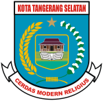

Description

South Tangerang is a city in the province of Banten, Indonesia. Located 30 km (19 mi) on the southwestern border of Jakarta, the city forms part of the Greater Jakarta metropolitan area. It was administratively separated from Tangerang Regency on October 29, 2008.[1] According to the 2020 Census, the city population was 1,354,350 inhabitants, including ten thousand refugees and asylum seekers from Afghanistan, Pakistan, Iraq, Yemen, Palestine, Sudan, Somalia, Sri Lanka, Myanmar and other nationalities who tried to seek asylum in third countries but stranded in Indonesia for years who under supervision and protection from IOM-UN Migration Indonesia. These refugees settled in several accomodations such as in Il Dormitorio dormotories in Gading Serpong; Maysa Cireundeu in East Ciputat; Kalideres Immgiration Detention Centre; and several accomodations managed by UNHCR and IOM Indonesia. The total area is 147.19 km2 (56.83 sq mi).[2] It's second-largest city in Banten in terms of population, and has grown rapidly, not only as Jakarta's satellite city, but also the development of business districts and commerce due to presence of large-scale planned town by private developers.
South Tangerang is home to some planned towns built by private developers, the notable ones are Alam Sutera (North Serpong), BSD City (Serpong), and Bintaro Jaya (Pondok Aren), complete with facilities such as business centres, shopping malls, and international schools.